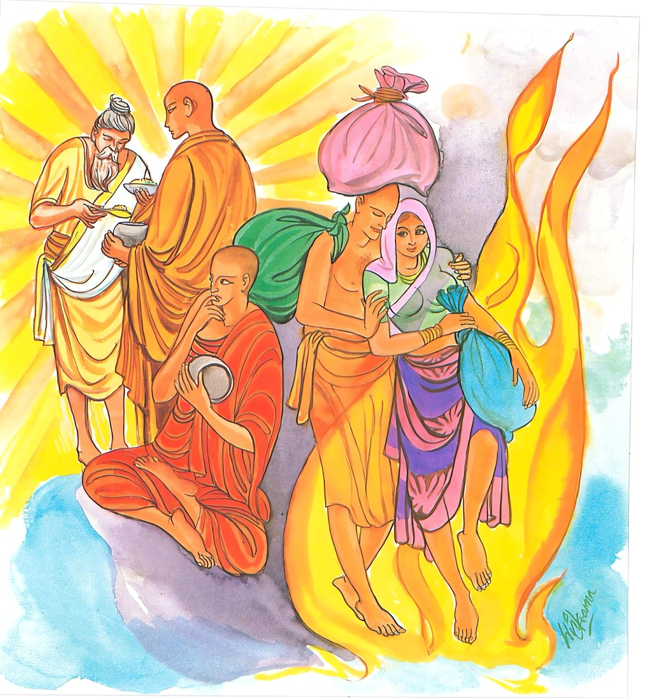
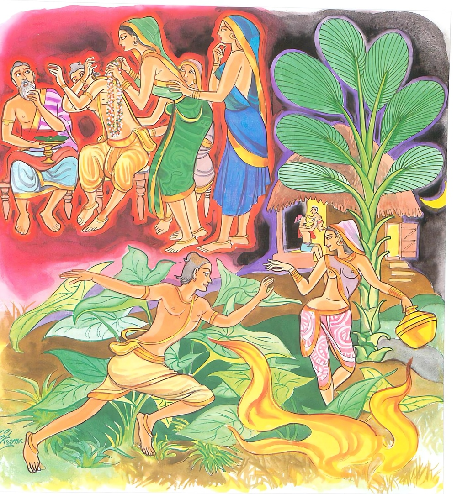

22-8 පසුපස නො වැසූ නිගණ්ඨයෝ
මෙම කතාව ධම්මපද අටුවාවෙන් ද කියවන්න.
අලජ්ජිතායෙ ලජ්ජන්ති ලජ්ජිතායෙ න ලජ්ජරෙ
මිච්ඡාදිට්ඨිසමාදානා සත්තා ගච්ඡන්ති දුග්ගතිං.
ලජ්ජා නො කටයුතු තන්හි යම් කෙනෙක් ලජ්ජා කෙරෙත් ද, ලජ්ජා කටයුතු තන්හි ලජ්ජා නො කෙරෙද් ද, (ලජ්ජා නො කළ මනා තැන ලජ්ජා කිරීම ය, ලජ්ජා කටයුතු තැන ලජ්ජා නො කිරීම ය යන මේ) තුච්ඡ වූ විපරීත වූ දෘෂ්ටිය ගෙණ වසන අඥාන සත්ත්වයෝ (සතර) අපායට යන්නාහ.

අභයෙ භයදස්සිනො භයෙ චාභයදස්සිනො
මිච්ඡාදිට්ඨිසමාදානා සත්තා ගච්ඡන්ති දුග්ගතිං.
බිය නො දැක්ක මනා තන්හි බිය දක්නා සුලු වූ, බිය දැක්ක මනා තන්හි නොබිය දක්නා සුලු වූ, (මෙසේ) විපරීත දෘෂ්ටි ගෙණ වසන අඥාන සත්ත්වයෝ නරකාදි දුගතියට යන්නාහ.

දවසක් භික්ෂූන් වහන්සේලා නිගණ්ඨයන් දැක “ඇවැත්නි! මේ නිගණ්ඨයෝ පසුපස නො වැසූවෝ ද ඉදිරිපස වසා සිටුනා බැවින් නූලක් පමණකුත් ඇඟ නැති ව ඇවිදුනා මුළුමනින් නිරුවත් වූ අචෙලකයනට වඩා ඉතා හොඳ ය, මොවුහු ලජ්ජා ඇතියහ’යි සිතම්හ”යි කතාවක් ඉපද වූහ. භික්ෂූන් කළ මේ කතාව ඇසූ නිගණ්ඨයෝ “අපි සිරුරු අවයව වසන්නට රෙදි නො අඳින්නෙමු, ලජ්ජාව නිසා රෙදි අඳින්නමෝ නො වම්හ, වැලි පස් දූලි ආදීහු ද පණැති සත්ත්වයෝ ය, අප මෙන් දිවි ගලවන්නෝ ම ය, එහෙයින් ඔවුහු තුමූ අපගේ කෑම බඳුන්හි වැටෙනු වළක්වා කෑම බඳුන් රක්නා පිණිස ඉදිරිපස රෙදි කඩින් වසා ගනිමු”යි කියා ඔවුන් හා වාද විවාද වශයෙන් බොහෝ සේ කතා කළහ.
එකල්හි භික්ෂූන් වහන්සේලා බුදුරජුන් වෙත ගොස් පසෙක හිඳ මේ ප්රවෘත්තිය දන්වාලූහ. බුදුරජානන් වහන්සේ “මහණෙනි! ලජ්ජා නො ඉපදවිය යුතු තැන ලජ්ජා උපදවා, ලජ්ජා ඉපදවිය යුතු තැන ලජ්ජා නො උපදවන්නෝ සිවු අපාය පිහිට කොට ඇති මිත්ථ්යාග්රාහ ඇත්තාහු ම ය”යි වදාරණ සේක් මේ ධර්මදේශනාව කළ සේක.
අලජ්ජිතායෙ ලජ්ජන්ති ලජ්ජිතායෙ න ලජ්ජරෙ,
මිච්ඡාදිට්ඨිසමාදානා සත්තා ගච්ඡන්ති දුග්ගතිං.
.
අභයෙ භයදස්සිනො භයෙ චාභයදස්සිනො,
මිච්ඡාදිට්ඨිසමාදානා සත්තා ගච්ඡන්ති දුග්ගතින්ති.
ලජ්ජා නො කටයුත්තෙහි යම් කෙනෙක් ලජ්ජිත වෙත් ද, ලජ්ජා කටයුත්තෙහි ලජ්ජිත නො වෙත් ද, මිසදිටු දැඩි ව ගත් (ඒ) සත්ත්වයෝ දුගතියට යන්නාහු ය.
බිය නො විය යුත්තෙහි බිය දක්නා සුලු වූ ද, බිය විය යුත්තෙහි බිය නො දක්නා සුලු වූ ද, මිසදිටු දැඩිව ගත් (ඒ) සත්ත්වයෝ දුගතියට යන්නාහු ය.
අලජ්ජිතායෙ = ලජ්ජා නො කටයුතු තන්හි.
පිඬු සිඟා ගන්නා, පිඬු වළඳන්නට ගන්නා බඳුන් ලජ්ජා නො කටයුතු තැන් ය. එබඳුන් කොතෙක් වේලාත් සඟවා තැබු ව ද සිඟා යන්නට බත් කන්නට ඉදිරියට ගත යුතු බැවින් එබඳුන් ලජ්ජා කටයුතු තැන් නො වේ.
ඇතැම් නිගණ්ඨයෝ “වැලි පස් දූලි, දිවි ඇති සත්හු ය, ඉදින් බත් බුදින්නට ගන්නා බත් බඳුනෙහි ඔවුහු වැටුනාහු නම් දිවි ඇති සතුන් නැසුවා නම් වේ”යි බත් බඳුන් වසාගෙන ඇවිදින්නෝ ය. එහෙත් පව් විසින් ගෙණ එය ලජ්ජිත වීමට තැනෙක නො වේ.
ලජ්ජන්ති = ලජ්ජිත වෙත් ද, හටගත් ලජ්ජා ඇත්තෝ වෙත් ද.
ලජ්ජිතායෙ = ලජ්ජා කටයුතු තැන්හි.
ලජ්ජාව නසන තැන් ලජ්ජා කටයුත් තැන් ය. ප්රධාන විසින් ලජ්ජා කටයුතු තැන් සිරුර පිළිබද ය. එහි ද ප්රධාන වනුයේ ගෑණු - පිරිමින්ගේ රහසඟ ය. එතැන් එකාන්තයෙන් ලජ්ජා කටයුතු තැන් ය. තව ද දෙකිසිළි - දෙ උර - දෙ බාහු - දෙ දන - ආනිසද යන මෙතැන් ද ලජ්ජා කටයුතු තැන් ය. ගෑණුන් පිළිබඳ පියොවුරු ද ලජ්ජා කටයුතු තැනෙක. මෙසේ වතුදු මුළු සිරුර ම ලජ්ජා කටයුතු තැන සේ ගත යුතු ය.
න ලජ්ජරෙ = ලජ්ජිත නො වෙත් ද.
මෙ කියූ තැන් ලජ්ජා කටයුතු තැන් සේ මිනිසුන් මනා පැවතුම් ඇතියවුන් වූ දා සිට වනචරයුගය ඉක්ම ගිය තැන් සිට සම්මත වුව ද ඇතැම් තීර්ත්ථකයෝ “ලජ්ජා ස්ථාන වැසුනේ නම් අපගේ තපස් බිඳෙති”යි පාපයෙහි ලජ්ජායෙනැ යි කියා රහසඟ නො වසා ඇවිදින්නෝ ය.
මෙ දවස ද ලජ්ජාස්ථාන නො වැසීම තපසකැයි ගත් තීර්ත්ථකයන් සේ ‘තපසකැ’යි කියාත් නො ගෙණ රහසඟ ඈ ලජ්ජා කටයුතු තැන් රෙදි පිළීයෙන් නො වසා ගෑණුන් හා පිරිමින් උනුන් රාගයෙන් පොළොඹවා ගන්නා ලජ්ජා කටයුතු තැන් නො වසන, ලජ්ජා කටයුත් තැන් පෙන්වන නිරුවතින් ප්රසිද්ධස්ථානයන්හි දවස් ගෙවන ගෑණු - පිරිම වෙති යි පළට ව ඇත්තේ ය. ඒ එසේ නම් ඒ ගෑණු - පිරිමි මිනිස් රුවින් පෙණී සිටින තිරිසන් ගියෝ ය. මිනිස්සු නො වෙත්. ඇතැම් කෙනෙක් සිතා ම ලජ්ජා ස්ථාන පෙණෙන සේ දුහුල් පිළීයෙන් යන්තමකට සිරුර වසා ගණිත්. ධනයෙන්, කුලයෙන්, බලයෙන්, තනතුරෙන්, කොතරම් උසස් තැන් ගෙණ සිටියෝ ද මෙතැන්හි හටගත් ලජ්ජා නැත්තාහු නම් ඔවුහු හැම කෙනෙක් බලු - බළල් - ගෙරි - සරක් - එළු - බැටළු - කුකුළු - හූරු - වග - වලස් ඈ තිරිසන් ගියෝ ම ය. තිරිසන්නුම ය.
මිච්ඡාදිට්ඨිසමාදානා = මිසදිටු දැඩි ව ගත්.
ලජ්ජා නො කටයුතු තැන් ලජ්ජා කටයුතු තැන් කොට, ලජ්ජා කටයුතු තැන් ලජ්ජා නො කටයුතු තැන් කොට ගැණීම මිත්ථ්යාදෘෂ්ටිය යි. එසේ ගන්නේ ‘මිච්ඡාදිට්ඨිසමාදාන’ නම්. “තෙන තෙසං අලජ්ජිතබ්බෙන ලජ්ජිතං ලජ්ජිතබ්බෙන අලජ්ජිතං තුච්ඡ ගහණභාවෙන චෙව අඤ්ඤථාගහණභාවෙන ච මිච්ඡාදිට්ඨි හොති තං සමාදිසිත්වා පන විචරන්තා තෙ මිච්ඡාදිට්ඨිසමාදානා” යනු අටුවා.
සත්තා ගච්ඡන්ති දුග්ගතිං = සත්ත්වයෝ දුගතියට යන්නාහ. [1]
රූප - ශබ්ද - ගන්ධ - රස - ස්ප්රෂ්ටව්ය යන පංචකාමයෙහි ඇලී ගත්තෝ ‘සත්ත’ නම්. මොවුහු මිච්ඡාදිට්ඨිසමාදාන හේතුවෙන් අපායයට යන්නෝ ය. නිච්ඡන්දරාගීහු ද රූඪී විසින් සත්ත යි කියනු ලැබෙත්.
අභයෙ භයදස්සිනො ච = නො බියවියයුත්තෙහි බිය දක්නා සුලු වූ ද.
ආහාරභාජනය නිසා රාග - දෝස - මෝහ - දිට්ඨි - කිලෙස - දුච්චරිත - භය කිසිවකුත් නො ද උපදනා බැවින් ආහාරභාජනය ‘අභය’ නම්. එහෙත් ආජීවකයෝ රජස් නම් වූ ප්රාණීහු අහර බඳුනෙහි වැටුනෝ නම් අපි සතුන් නැසුවෝ වම්හ”යි අහරබඳුන් වසා ගෙණ ඇවිදිත්. ඔවුහු එසේ අහරබඳුන් බිය විය යුතු තැන් කොට ගත්හ. එහෙයින් එබන්දෝ ‘අභයෙ භයදස්සී’ නම් වේත.
භයෙ ච අභයදස්සිනො = බිය විය යුත්තෙහි බිය නො දක්නා සුලු වූ ද.
රහසඟ ඈ නිසා රාගාදීන් උපදනා බැවින් රහසඟ ‘හය’ නම්. එහෙත් ආජීවකයෝ රහසඟ වැසිය යුතු බිය විය යුතු තැනක් කොට නො ගණිත්. “ලජ්ජා විය යුතු තැන් ඉදින් වැසුවෝ නම් අපගේ තපස් බිඳී යන්නේ ය”යි බියෙන් එතැන් නො වසා අවිදුනාහ. එහෙයින් එබන්දෝ ‘හයෙ ච අභයදස්සී’ නම් වෙත්.
මිච්ඡාදිට්ඨිසමාදානා = මිසදිටු දැඩි ව ගත්.
මෙසේ නො බිය විය යුතු තැන්, බිය විය යුතු තැන් කොට බිය විය යුතු තැන්, නො බිය විය යුතු තැන් කොට ගැණීම මිත්ථ්යා දෘෂ්ටිය යි. එසේ ගත්තෝ ‘මිච්ඡාදිට්ඨිදසමාදාන’ නම් වේත.
සත්තා ගච්ඡන්ති දුග්ගතිං = සත්ත්වයෝ දුගතියට යන්නාහ.
මෙසේ මේ මිසදිටු ගත් අඥානසත්ත්වයෝ මරණින් මතු අපායයෙහි උපදින්නාහ.
මේ ධර්මදේශනාව ඇසූ නිගණ්ඨයෝ ධර්මදේශනාවගේ අවසානයෙහි කළකිරුණු සිතැත්තාහු පැවිදි වූහ. පැමිණ සිටි පිරිසට ද ධර්මදේශනා තොමෝ වැඩ සහිත වූ ය.
නිගණ්ඨ වස්තුව නිමි.
-
1-12 ‘දුග්ගතිං’ යනු බලනු. ↑